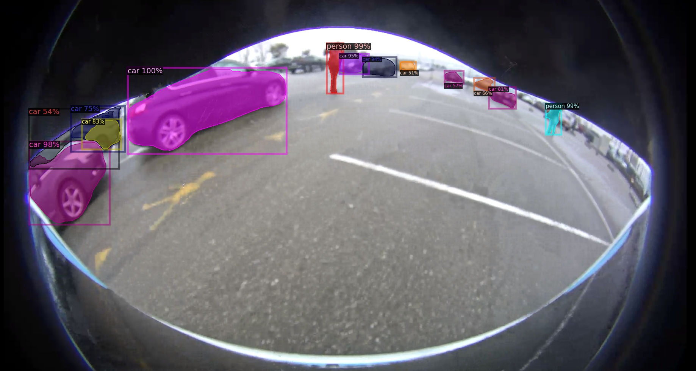
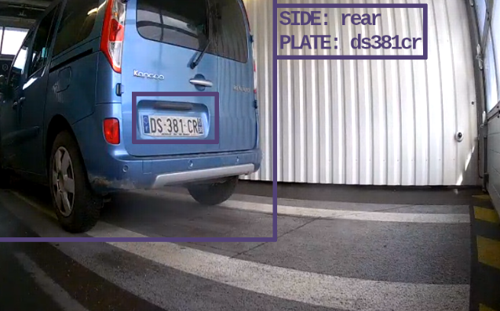
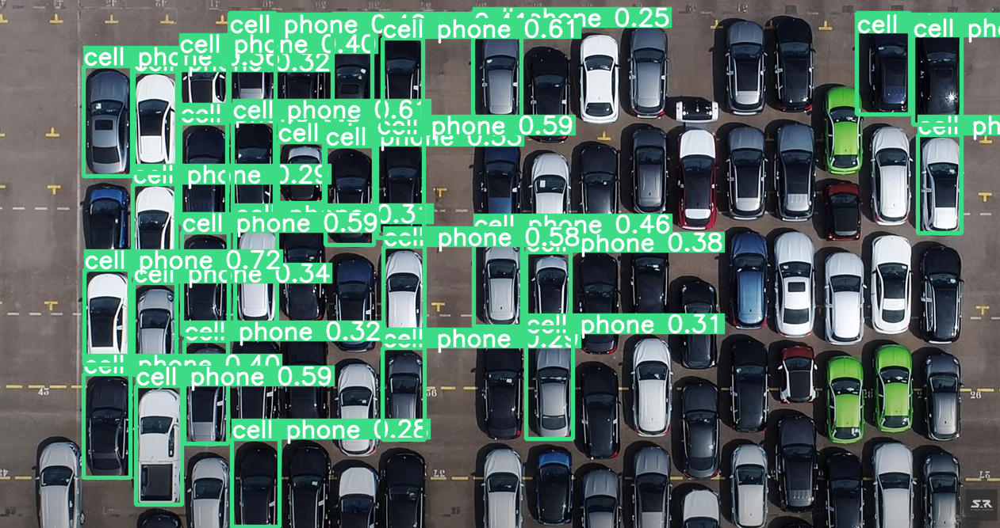
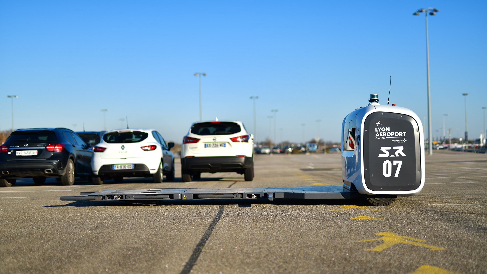

ClearEye Technologies
Because no robotics company
should operate without vision-based AI
We don't pretend like Elon Musk that cameras are enough to operate, but they are definitely a vital element of the perception stack of an up-to-date AGV
Relying on vision is a must-have for :
- safety
- efficiency
We offer a cost-efficient solution to ...
- detect efficiently human presence
- monitor your assets in real-time
to build a true digital twin
Embedded safety
Why ?
Adapting the robot behaviour when a human
(or an unexpected event) is detected
How ?
Leveraging real-time computer vision,
bringing semantic information
We also tested SAM (Segment Anything Model), released by Meta AI in April 2023, which is a promptable segmentation system :
Why is our solution
cost-efficient ?
Because we can detect skeletons with low-res cameras
(here with another model called YOLOX, introduced in 2021)Even when the persons are far from the robot
And in harsh conditions
We can handle fisheye lenses the same way
Build a true digital twin
Collecting vehicle information, including orientation
Monitoring infrastructure dynamically
(avoiding de-synchronisations ...)
Builiding THE ultimate digital twin of a compound !
Next steps

- Improve localisation performance with Visual SLAM
Why you should invest in ClearEye Technologies
- Because we address the growing need for enhanced safety and efficiency in robotized environments
- Because the autonomous mobile robot market is forecast to experience significant growth in the coming years
- Because ClearEye technology is well-positioned to capitalize on this growth. The company's camera-based perception system can be integrated into a wide range of autonomous robots, expanding its market reach and potential customer base.
Conclusion
ClearEye Technologies' unique focus on pedestrian detection and traffic zone surveillance sets it apart from competitors, enhancing its market value
Don't trust competitors' solutions !
Special thanks to Raphael, Jordy, Yanis and Mahmoud for the acquisitions at LYS !
